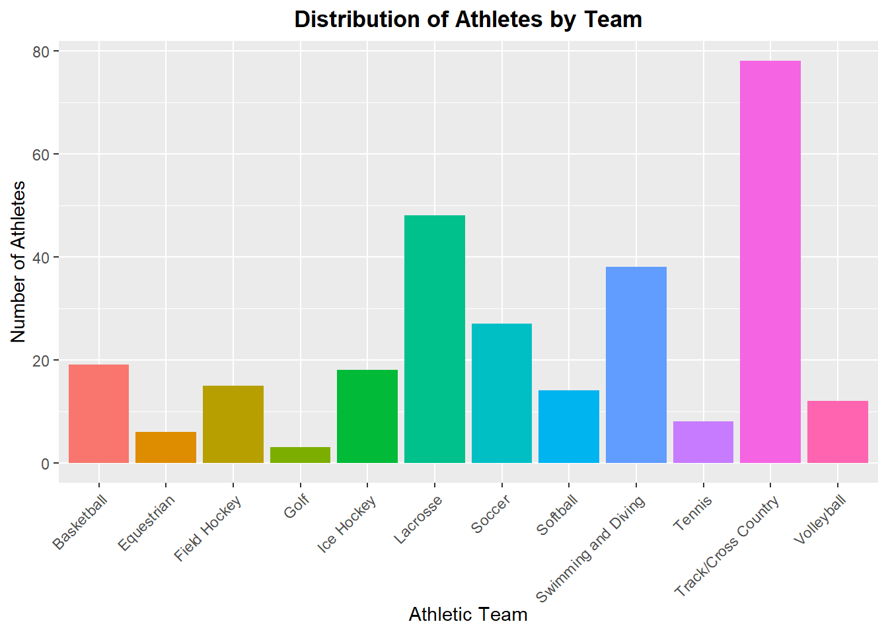
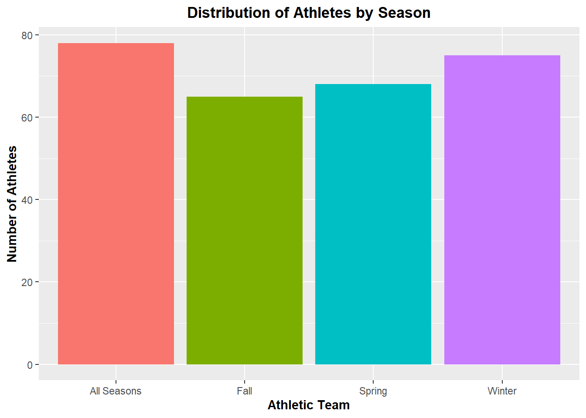
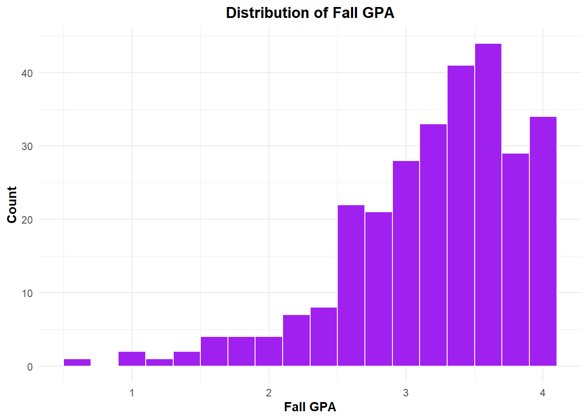
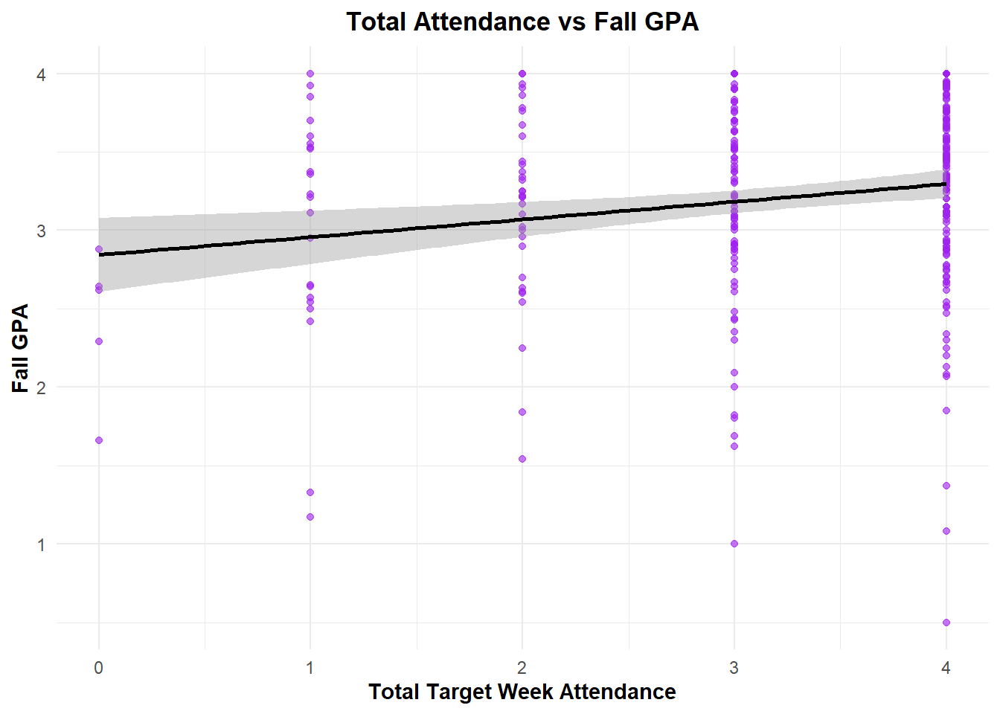
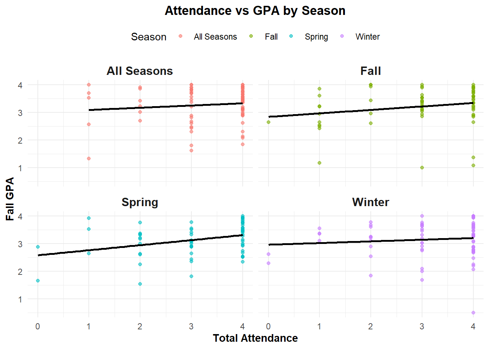
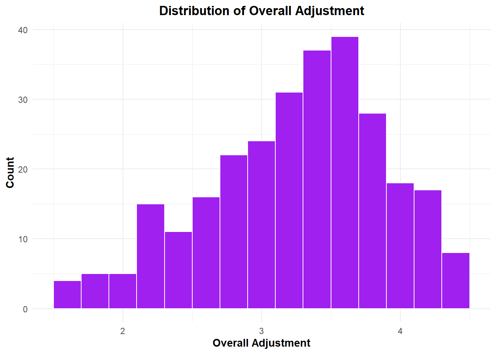
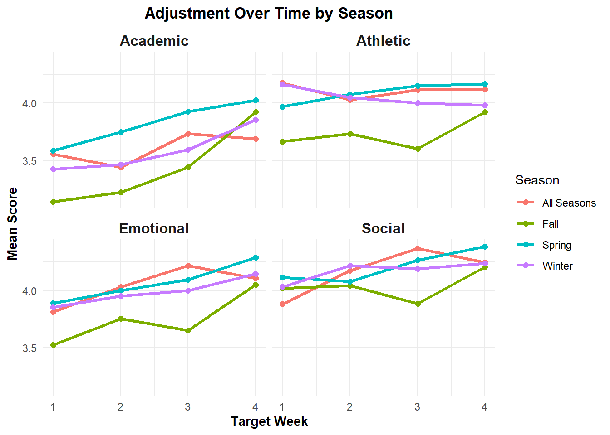
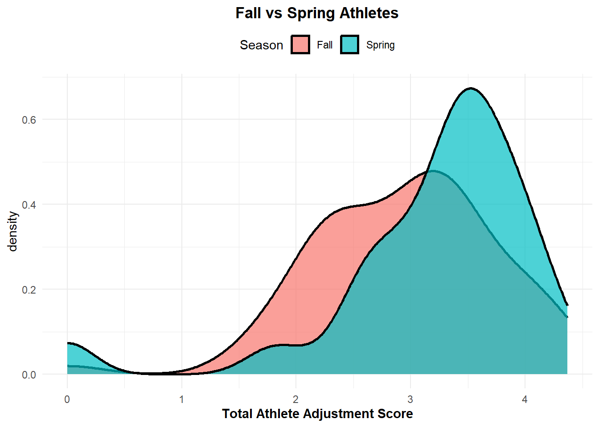

Student-Athlete Mentorship: An Analysis of First-Year Athlete Adjustment
Introduction
The Student-Athlete Mentor (SAM) program was introduced at SUNY Geneseo in 2019 to provide guidance and support to first-year athletes at crucial periods throughout their first two semesters on campus. The program pairs first-year athletes with an older mentor who is of their same or similar major but not on their team. This gives the first-year an outlet to go to if they need help in a specific area or need to talk to someone about a personal issue they are dealing with. The structure of the program includes required pre-determined target week meetings which are scheduled at times in the semester where a student may need extra support, such as exam periods and registration. The program is built with the idea that peer mentorship can serve as a bridge between academic, athletics and the overall well-being during an athlete’s first year in college. The goal of the current study was to evaluate the effectiveness of the SAM program in supporting student-athlete success in areas including academic, emotional, social and athletic well-being. This is a topic very close to me, as I have been a mentor for the last three years and had a mentor myself in my first year at Geneseo.
Currently, there is limited knowledge on Division III athletics and the adjustment experiences of first-year athletes. For any student, going to college and learning how to navigate the new lifestyle is a difficult task and adding the commitment of a being an athlete to the mix makes it even harder. This is especially true at the Division III level as there is generally less overall support than one would find at a higher level program. I have experienced first-hand the value of this program and I believe more institutions would benefit from implementing something similar. However, the lack of representation and knowledge is hindering the spread of an idea like this.
To better understand the impact of the SAM program, this study focuses on two main research questions. First, is there a statistically significant association between the number of mentoring sessions attended by mentees and their end-of-semester GPA? Academic success is a crucial part of a student-athletes life and determining if continual mentorship promotes a higher outcome is a key indicator that the program is helping. Secondly, does the athletic season in which a student competes influence their adjustment during their first semester at Geneseo? Depending on when an athlete is enduring the stress of being in season can have a great impact on their lives, this question aims to see if it truly does effect their ability to adjust in their first semester.
Through quantitative analysis of program participation data and academic outcomes, this study aims to provide insight into the role of peer mentorship in affecting transitions for first-year athletes. The findings have the potential to point to what the best methods are for mentorship programs that aim to support student-athlete development.
Data
Source and Scope
The data set used is the same one I used for my DANL 399 directed study. It was collected throughout the course of two years in pre-meeting forms that the first-year athletes were asked to complete before their target week meetings with their SAMs. These meetings occur four times in the fall semester, the dates falling around: middle of September, middle of October, middle of November and beginning of December. The data set consisits of first-year athletes from two cohorts: 2023-2024 (n = 143) and 2024-2025(n = 142).
Variables
Adjusted_ID: Athletes unique ID formatted in a way to still be able to see what cohort they are from
GPA_Fall: The athlete’s end-of-semester GPA for the fall semester.
Athlete_Team: The athlete’s team.
Total_Attendance: The total number of target week meetings the athlete attended in the fall semester.
Season: The athlete’s corresponding season based off of what time of year their conference tournament occurs.
Overall_Adjustment: The average of an athletes emotional adjustment, athletic adjustment, social adjustment and social adjustment from all four target weeks.
Each of the following variables have a column for each target week, (let # = 1, 2, 3, 4)
TW#_Attendance: Whether an athlete had attendance at that target week meeting.
Emotional_#: The athletes self reported emotional adjustment score for that target week.
Academic_#: The athletes self reported academic adjustment score for that target week.
Athletic_#: The athletes self reported athletic adjustment score for that target week.
Social_#: The athletes self reported social adjustment score for that target week.
Cleaning and Processing
For athletes with missing values at certain target weeks, which tells us they did not attend their meetings, we chose to ignore these values when calculating our statistics and making visualizations.
When creating the code book for the data set, there were many variables that we had to transform from non-numerical to numerical values.
TW#_Attendence: Originally input as 1 if attended and 99 if missing, recoded as 1 for attended and 0 if not attended.
Total_Attendance: Calculated by adding all of the TW#_Attendence columns for each athlete. 0 represents no meetings attended, 4 represents all meetings attended.
Season: Created by using mutate, checking what was in the Athlete_team column and assigning the corresponding season.
Emotional_#: Original options for athletes to choose: (Excellent, Good, Unsure, Average, Poor) Coded as (5, 4, 3, 2, 1), respectively
Academic_#: Original options for athletes to choose: (Excellent, Good, Unsure, Average, Poor) Coded as (5, 4, 3, 2, 1), respectively
Athletic_#: Original options for athletes to choose: (Excellent, Good, Unsure, Average, Poor) Coded as (5, 4, 3, 2, 1), respectively
Social_#: Original options for athletes to choose: (Excellent, Good, Unsure, Average, Poor) Coded as (5, 4, 3, 2, 1), respectively
Overall_Adjustment: Calculated by averaging together every Emotional, Academic, Athletic and Social adjustment value for each athlete.
Rows: 286 Columns: 27
── Column specification ────────────────────────────────────────────────────────
Delimiter: ","
chr (1): Athlete_Team
dbl (26): Adjusted_ID, GPA_Fall, Sex, Cohort, Major_Fall, Total_Attendance, ...
ℹ Use `spec()` to retrieve the full column specification for this data.
ℹ Specify the column types or set `show_col_types = FALSE` to quiet this message.
Below are the summary statistics for the three variables we are focusing on in this study.
summary(SAMS$GPA_Fall)
Min. 1st Qu. Median Mean 3rd Qu. Max. NA's
0.500 2.880 3.330 3.204 3.670 4.000 1
summary(SAMS$Total_Attendance)
Min. 1st Qu. Median Mean 3rd Qu. Max.
0.000 3.000 4.000 3.178 4.000 4.000
summary(SAMS$Overall_Adjustment)
Min. 1st Qu. Median Mean 3rd Qu. Max.
0.000 2.792 3.333 3.179 3.684 4.368
Storytelling
ggplot(SAMS, aes(x = Athlete_Team,fill = Athlete_Team)) +geom_bar() +scale_color_viridis_b() +labs(title='Distribution of Athletes by Team',x='Athletic Team',y='Number of Athletes') +theme(axis.text.x =element_text(angle =45, hjust=1),legend.position ="None",plot.title =element_text(hjust = .5,face ='bold'))

Looking at the distribution of athletes by team, it can be seen that there is an uneven number of first-year athletes on each team. Also it should be noted, some of the teams such as lacrosse and soccer include both male and females athletes.
ggplot(SAMS, aes(x = Season,fill = Season)) +geom_bar() +scale_color_viridis_b() +labs(title='Distribution of Athletes by Season',x='Athletic Team',y='Number of Athletes') +theme(legend.position ="None",plot.title =element_text(hjust = .5,face ='bold'),axis.title =element_text(face ='bold'))

Now, grouping the teams by season, we can see that there is a much more evenly distributed graph. That is, Fall (21.7%), Spring (22.7%), Winter (26.2%) and All Seasons (29.4%). This distribution allows us to make comparisons between seasons.
Research Question 1
Is there a statistically significant association between the number of mentoring sessions attended by mentees and their end-of-semester GPA?
ggplot(SAMS, aes(x = GPA_Fall)) +geom_histogram(binwidth =0.2, fill ="purple", color ="white") +labs(title ="Distribution of Fall GPA", x ="Fall GPA", y ="Count") +theme_minimal() +theme(axis.title.y =element_text(face ='bold'),axis.title.x =element_text(face ='bold'),plot.title =element_text(face ='bold',hjust = .5))
Warning: Removed 1 row containing non-finite outside the scale range
(`stat_bin()`).

Above is a histogram showing the distribution of Fall GPA. The data is skewed to left with a majority of entries falling between 2.5 and 4.
ggplot(SAMS, aes(x = Total_Attendance, y = GPA_Fall)) +geom_point(alpha =0.6, color ="purple") +geom_smooth(method ="lm", se =TRUE, color ="black") +labs(title ="Total Attendance vs Fall GPA",x ="Total Target Week Attendance",y ="Fall GPA") +theme_minimal() +theme(axis.title.y =element_text(face ='bold'),axis.title.x =element_text(face ='bold'),plot.title =element_text(face ='bold',hjust = .5))
`geom_smooth()` using formula = 'y ~ x'
Warning: Removed 1 row containing non-finite outside the scale range
(`stat_smooth()`).
Warning: Removed 1 row containing missing values or values outside the scale range
(`geom_point()`).

This scatter plot illustrates the relationship between the number of mentoring meetings attended and fall GPA among first-year student-athletes. Each point represents an individual athlete, with total attendance on the x-axis, ranging from 0 to 4, and fall GPA on the y-axis.
A clear trend emerges and shows that student-athletes who attended more SAM meetings tended to achiever higher GPAs. This positive correlation is further shown by the upward sloping trend line which suggests a slight but consistent increase in GPA with greater attendance. Further, the data shows a denser clustering of points with higher GPAs around those who attended all four meetings, compared to those with lower attendance.
ggplot(SAMS, aes(x = Total_Attendance, y = GPA_Fall,color = Season)) +geom_point(alpha =0.6) +geom_smooth(method ="lm", se =FALSE, color ="black",alpha = .5) +facet_wrap(~Season) +labs(title ="Attendance vs GPA by Season",x ="Total Attendance",y ="Fall GPA") +theme_minimal() +theme(axis.title.y =element_text(face ='bold'),axis.title.x =element_text(face ='bold'),plot.title =element_text(face ='bold',hjust = .5),strip.text =element_text(face ='bold',size =12),legend.position ="top")
`geom_smooth()` using formula = 'y ~ x'
Warning: Removed 1 row containing non-finite outside the scale range
(`stat_smooth()`).
Warning: Removed 1 row containing missing values or values outside the scale range
(`geom_point()`).

This figure breaks down the relationship between SAM meeting attendance and fall GPA across different athletic seasons. Each subplot reveals a positive trend between attendance and GPA, with all trend lines sloping upward. This shows that regardless of when an athlete is in season, higher attendance at mentoring meetings is generally associated with better academic performance. The consistency of this trend across all groups supports the conclusion that the SAM program provides academic benefits to student-athletes throughout the entire semester.
Research Question 2
Does the athletic season in which a student competes influence their adjustment during their first semester at Geneseo?
SAMS |>filter(Overall_Adjustment !=0) |>ggplot(aes(x = Overall_Adjustment)) +geom_histogram(binwidth =0.2, fill ="purple", color ="white") +labs(title ="Distribution of Overall Adjustment", x ="Overall Adjustment", y ="Count") +theme_minimal() +theme(axis.title.y =element_text(face ='bold'),axis.title.x =element_text(face ='bold'),plot.title =element_text(face ='bold',hjust = .5))

This histogram shows the distribution of overall adjustment, excluding those athletes who had an overall adjustment average of 0, the graph is relatively normal with slight skewness to the left.
This interactive boxplot displays the distribution of overall adjustment scores among first-year student-athletes, separated by athletic season. We can observe a slight variation in overall adjustment levels by season. Fall athletes tend to have an overall lower adjustment score compared to the other seasons, suggesting they may have a more difficult time adjusting to the college lifestyle while also being in season.
The interactive component allows the user to hover over a dot and learn what sport the athlete was on as well as their athlete ID which can be used to see what cohort they were apart of. If the ID begins with “2324” the athlete is in the 2023-2024 cohort and if it begins with “2425”, the athlete is from the 2024-2025 cohort. This allows for a more investigative look at the sports and where they fall within the adjustment.
ggplot(adjustment_long, aes(x = Week, y = Score, color = Season)) +stat_summary(fun = mean, geom ="line", linewidth =1.2) +stat_summary(fun = mean, geom ="point", size =2) +facet_wrap(~Type) +labs(title ="Adjustment Over Time by Season",x ="Target Week",y ="Mean Score") +theme_minimal() +theme(plot.title =element_text(hjust =0.5,face ='bold'),axis.title =element_text(face ='bold'),strip.text =element_text(face ='bold',size =12))
Warning: Removed 944 rows containing non-finite outside the scale range
(`stat_summary()`).
Removed 944 rows containing non-finite outside the scale range
(`stat_summary()`).

The line chart above displays the athletes adjustment over time by season, separated by adjustment areas. We can observe that all four subplots show an increase in adjustment over the four target weeks, telling us that as the semester goes on all four seasons of athletes are becoming more adjusted. The format of this plot allows us to locate the adjustment of specific seasons and at which target weeks they may have a large increase or decrease. This leads to the conclusions that some athletes may need more supports at different times of the year.
This Shiny app takes the data from the previous line chart and allows users to select which season and adjustment area they would like to look at. The size of the axis are tailored to the specific charts data and allows for further inspection of exact adjustment levels throughout the semester.
Warning: Using `size` aesthetic for lines was deprecated in ggplot2 3.4.0.
ℹ Please use `linewidth` instead.

Looking at the densities fall and spring adjustment scores it can be seen that the spring scores are much more concentrated in the 3-4 range while the fall scores are hanging around the 2 point. We chose to look specifically at the fall and spring scores because it was observed, through statistical testing, that this is where there were statistically significant differences at the mean-level.
Implementation
The findings in this study have several practical implications for supporting first-year athletes both and SUNY Geneseo and other institutions. The correlation between the number of mentoring sessions attended and end-of-semester GPA points to the idea that adding more mentoring meetings could be beneficial for students. It would help them make sure they are staying on top of their schoolwork throughout the semester, work as a system to hold them accountable. Additionally, the visualizations that clearly show a difference in adjustment between athletes in different seasons leads to the idea that tailoring the mentoring to specific teams at certain times may be helpful. For example, knowing that the fall athletes start below everyone else in adjustment could lead us to making the decision to start their mentoring sessions a few weeks earlier in the semester than we currently do.
Further, the structure of the SAM program could be adapted and expanded to serve the entirety of Geneseo’s first-year students. While this would require more resources and coordination, a campus-wide mentorship program could support non-athlete first-year students by pairing them with an upperclassman that is their same major. This could help with the difficult transition into managing a college-level workload as well as with navigating the ins and outs of their academic department. Further, data collected through this campus-wide mentoring program could be given directly to the academic advisors to see where the first-years are needing more supports. This could lead to specialized talks and workshops that will target exactly what the current group of students need.
Looking to other institutions, this model could be adapted to fit different campus cultures and student populations. Currently, at the Division III level, there is not a lot of campus-support for student-athletes at any university. Taking the results of this study to the athletic departments could show the good that a mentorship program like this would do.
Conclusions
This study provides strong evidence for the positive impact of the SAM program in supporting both academic and personal adjustment for first-year athletes at SUNY Geneseo. Visualizations created show a clear correlation between mentoring session attendance and higher end-of-semester GPA outcomes, suggesting that consistent mentorship can add benefit to a student’s academics. Beyond academic outcomes, the study also explored how a student-athlete’s season has an effect on their adjustment. Visual models across emotional, academic, athletic and social scores showed noticeable differences between athletes in different seasons. These insights suggest that athletes competing at different times in the year may need more tailored mentoring. Overall, the results point to the value of consistent peer mentorship when adjusting to college life.
Important to note, a limitation of this study is its limited generalizability due to the fact that it was conducted at one Division III university. This combined with the lack of a control group of non-mentored athletes makes it difficult to isolate the specific impact of the SAM program from other factors that may influence adjustment and academic performance.
If future studies were to be conducted, exploration of the SAM program and its effects on student-athlete adjustment during the spring semester would be beneficial to see. Repeating this exact study but with data from the spring semester would allow for longitudinal comparisons and would open up new conclusions to be made.
References
Access to dataset was given through directed study.
Generative AI was used for aid in creating visualizations and debugging.